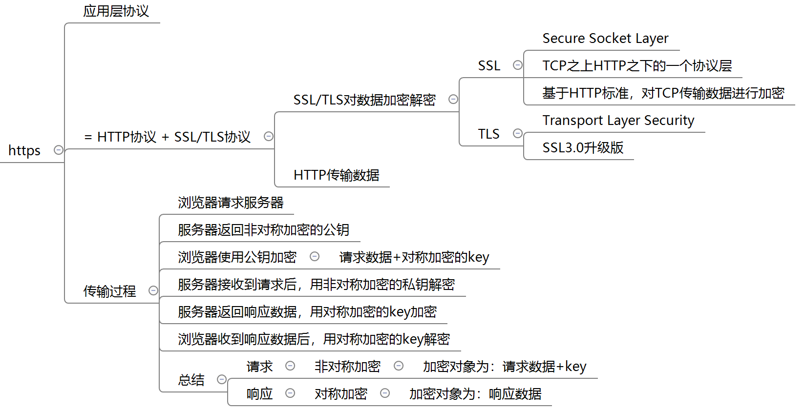

测试开发刚哥
latest
Intro
Quality Assurance
Case Design
Java
JMeter
TestNG
Spring Boot
JUnit
JaCoCo
Mockito
Maven
MyBatis
Message Queue
Vue
Python Basic
Python Advance
pytest
tep
teprunner
Django
Django REST framework
Flask
Locust
HttpRunner
DevOps
Nginx
Web Proxy
Allure Report
Security
Regular Expression
Algorithm
Interview
1 经典面试题
一个完整http请求会经历哪些过程？
HTTPS的原理？
Annual Summary
测试开发刚哥
»
Interview
»
1 经典面试题
View page source
1 经典面试题
¶
一个完整http请求会经历哪些过程？
¶
浏览器发起请求
解析域名得到ip进行TCP连接
浏览器发送请求数据和请求头信息
服务器应答
服务器返回响应头信息和响应数据
关闭TCP连接
浏览器收到响应数据
HTTPS的原理？
¶
